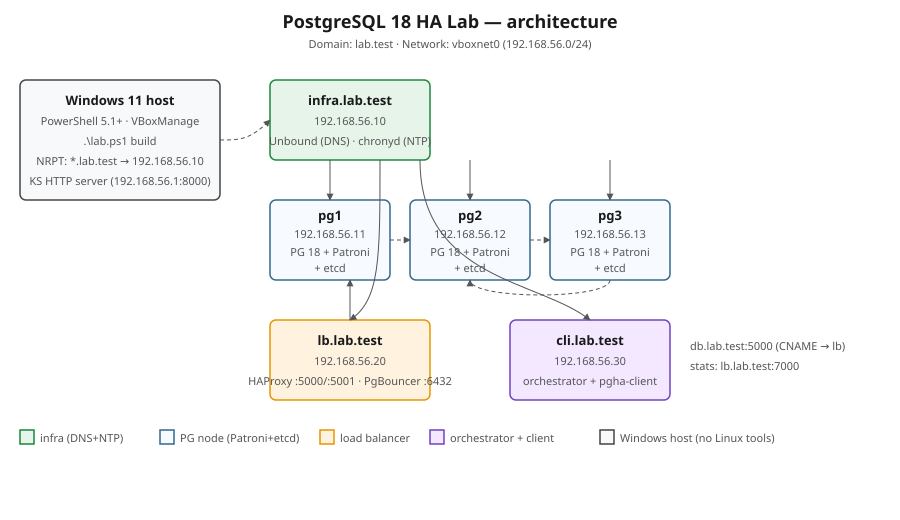
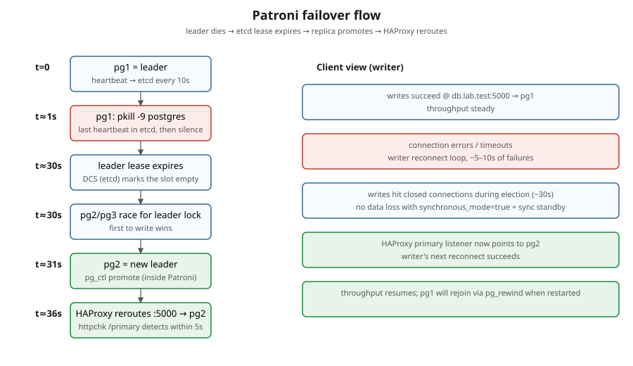
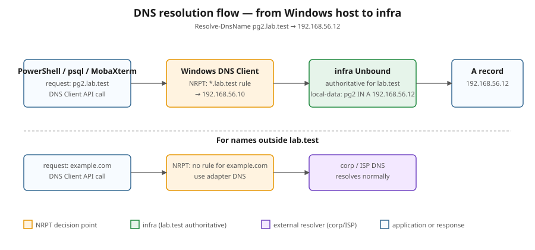

A fully reproducible HA cluster — Patroni · etcd · HAProxy · PgBouncer on six Rocky Linux 9.8 VMs — built & destroyed from a Windows 11 host with nothing but VirtualBox. 13 scripted failure scenarios prove it actually survives.
What is it
Everything you need to see PostgreSQL high availability work — and break — in a safe, repeatable VM lab.
This lab stands up a production-shaped PostgreSQL 18 cluster: three database nodes managed by Patroni, a three-node etcd consensus store, an HAProxy load balancer that always routes writes to the current leader, PgBouncer connection pooling, plus Unbound DNS and chrony NTP infrastructure — six VMs on a private host-only network.
The whole thing is orchestrated from a single PowerShell entrypoint (lab.ps1) on Windows 11
— no Ansible, no WSL, just VirtualBox. Build it, watch it self-heal, run a suite of 13 failure scenarios,
and measure how a real application survives a failover down to the second.
Driven entirely from Windows 11 + VirtualBox. One lab.ps1 dispatcher builds and tears down the lab.
Kill a leader, partition the network, lose etcd quorum — the cluster promotes, reroutes and rejoins on its own.
A Python client drives continuous load through a failover and records the real availability gap.
From baseline sanity to cascading double-failover and pg_rewind — each with automated PASS/FAIL assertions.
Architecture
Three PostgreSQL nodes, a load balancer, an infrastructure node (DNS+NTP) and an
orchestrator/client — all on 192.168.56.0/24.

| VM | Hostname | IP | RAM | vCPU | Role / components |
|---|---|---|---|---|---|
| infra | infra.lab.test | 192.168.56.10 | 1 GB | 1 | DNS (Unbound) + NTP (chronyd) |
| pg1 | pg1.lab.test | 192.168.56.11 | 4 GB | 2 | PostgreSQL 18.3 · Patroni · etcd |
| pg2 | pg2.lab.test | 192.168.56.12 | 4 GB | 2 | PostgreSQL 18.3 · Patroni · etcd |
| pg3 | pg3.lab.test | 192.168.56.13 | 4 GB | 2 | PostgreSQL 18.3 · Patroni · etcd |
| lb | lb.lab.test | 192.168.56.20 | 2 GB | 2 | HAProxy 2.8 · PgBouncer 1.23 |
| cli | cli.lab.test | 192.168.56.30 | 2 GB | 2 | Orchestrator · pgha-client (Python 3.11) |
Building blocks
Each component has one job. Together they deliver automatic failover with zero data loss.
Three-node streaming-replication cluster holding labdb. Synchronous replication guarantees a committed row survives failover.
The HA supervisor. Renews a leader lease in etcd, promotes a replica on leader loss (~30 s) and runs pg_rewind to rejoin old primaries. REST API on :8008.
Distributed consensus store — the cluster’s “brain”. Holds the leader lock (TTL 30 s) and config. Quorum 2/3 keeps the cluster writable; losing it triggers failsafe.
pg1 · pg2 · pg3TCP router using Patroni’s REST health checks: :5000→leader (writes), :5001→replicas (reads), stats on :7000. Reroutes automatically on failover.
Connection pooler in front of HAProxy — keeps per-query overhead low under load.
lbAuthoritative for lab.test, recursive for the rest. Resolves the stable app endpoint db.lab.test → lb.lab.test.
Stratum-2 time source on infra; every other node syncs to it — consistent clocks across the cluster.
infra → allPython test client: writer/reader drive load and record outages & downtime; monitor shows a live cluster TUI. Powers scenario 13.
Kernel watchdog fencing. If a hung leader can’t renew its lease, the kernel reboots the node and frees the lock immediately.
pg1 · pg2 · pg3Configuration
Failover flow


*.lab.test authoritatively and recurses everything else.Test scenarios
Each is a bash script with PASS/FAIL assertions, runnable individually
(lab.ps1 scenario NN) or as a suite. destructive ones kill
processes or VMs — the cluster self-heals.
| # | Scenario | What it proves | |
|---|---|---|---|
| 01 | baseline | Leader present, etcd 3/3, read+write through HAProxy | safe |
| 02 | kill-primary-hard | pkill -9 postgres on the leader — zero data loss (sentinel row survives) | destructive |
| 03 | poweroff-primary-vm | Host powers off the leader VM (VBoxManage) → failover → restart | destructive |
| 04 | graceful-switchover | Planned patronictl switchover to the sync standby, no data loss | safe |
| 05 | network-partition | iptables isolates the leader → failover, partition self-heals | destructive |
| 06 | etcd-single-loss | Stop etcd on one node — quorum 2/3 holds, cluster keeps working | safe |
| 07 | etcd-quorum-loss | Stop etcd on two nodes — failsafe mode (reads OK), then recover | safe |
| 08 | replica-restart | Restart Patroni on a replica — leader unchanged, rejoins fast | safe |
| 09 | pg-rewind-old-primary | Old primary rejoins via pg_rewind after a diverged timeline | safe |
| 10 | sync-vs-async | Toggle synchronous_mode — durability vs availability trade-off | safe |
| 11 | multi-host-libpq | Driverless failover: libpq target_session_attrs=read-write finds the leader | safe |
| 12 | cascading-failure | Kill the leader, then the new leader — a third is elected | destructive |
| 13 | app-failover-continuous | pgha-client load through a leader kill — measures app-side downtime | destructive |
Results
The whole suite (01–13) was executed agentically against the live cluster — over SSH, with
the host action for scenario 03 driven by VBoxManage. The cluster was not reset between
scenarios; it self-healed throughout.
Writer kept inserting (500 inserts, 1 outage, 3 reconnects); HAProxy moved writes to the new leader and the app resumed automatically.
The reader saw committed rows advance from max_id 1821 → 2337 across the failover — replication never stalled.
In kill-primary-hard, a row committed before the kill survived — synchronous replication held its promise.
| Symptom | Root cause | Fix |
|---|---|---|
switchover --master → No such option | Patroni 4.x removed --master | use --leader |
edit-config --apply '{json}' fails | --apply expects a file, not inline JSON | write a temp file |
| 412 — candidate ≠ sync_standby | sync mode requires the sync standby as candidate | pick sync_standby + fallback |
| write fails right after failover | new leader waits for a fresh sync standby | wait_writable + buffer |
leader didn’t change after pkill | Patroni restarts postgres before the lease expires | also systemctl stop patroni |
polluted sentinel id | psql appends the command-tag line | head -n1 |
| scenario hung, node isolated | iptables DROP also cut off the host | self-healing on-node timer |
| second failover never happened | second kill before sync standby re-established | wait_writable between kills |
Quickstart
One dispatcher, a handful of verbs. Full walkthrough in QUICKSTART.md · build by hand in MANUAL_INSTALL.md.
# verify the host (VirtualBox, RAM, disk, SSH key) .\lab.ps1 prereqs # build the whole lab from scratch (~30 min) .\lab.ps1 build # Windows DNS for *.lab.test (one-time, elevated shell) .\lab.ps1 dns install # show VM + Patroni cluster state .\lab.ps1 status # run a single scenario, or the whole suite (01–13) .\lab.ps1 scenario 13 .\lab.ps1 scenario all # build the interactive HTML report from the run .\lab.ps1 report agentic